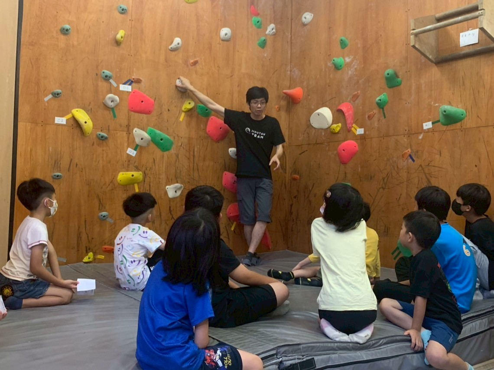
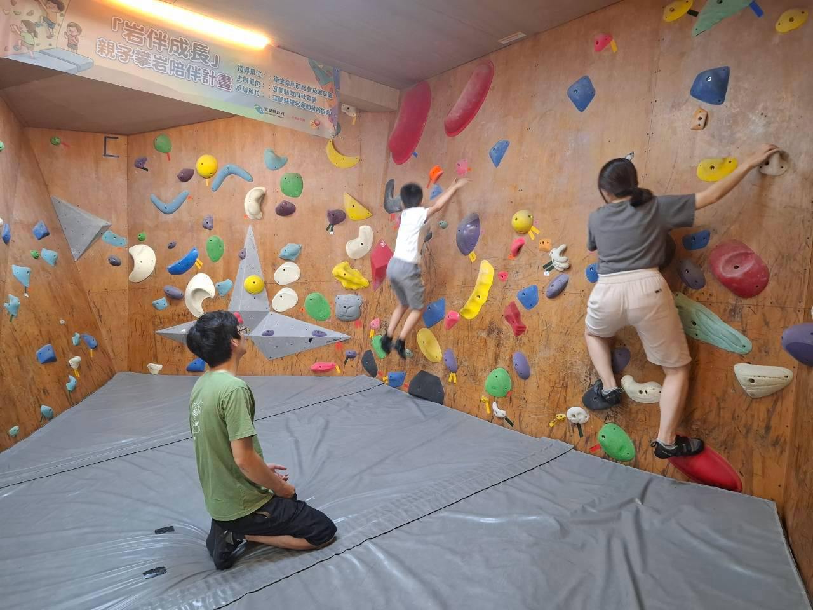
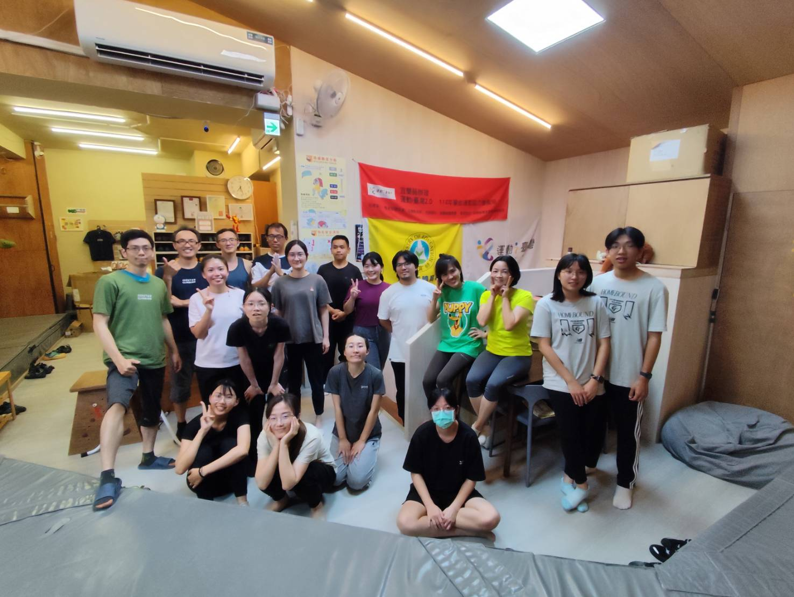
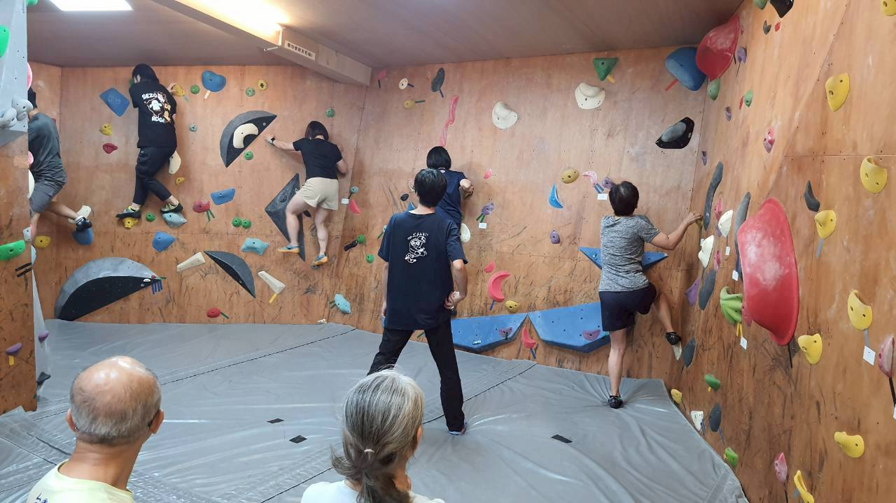

Why Jiou-Tau
為什麼宜蘭人第一次攀岩，會選久淘？
攀岩不只是挑戰體能，更需要思考路線、培養專注力與解決問題的能力。在一次次嘗試中慢慢突破自己，享受完成挑戰後的成就感——這是我們最想帶給你的事。
零經驗也能爬上去
館內路線依顏色區分不同難度，教練會帶你從最簡單的開始，不會有人一開始就被丟上高牆。想更安心，可以選入門體驗課，由教練一對一帶著你認識抱石。
親子同樂，孩子也能挑戰
許多家長帶孩子來，從一開始的害怕，到後來自己找到方法爬完一條路線。我們也有小朋友的團體課程，讓孩子在遊戲中培養運動興趣與專注力。
進階岩友的練習場
不只新手，想挑戰自我的攀岩愛好者也能在這裡找到屬於自己的樂趣。路線定期更換，讓每一次來都有新的課題可以解。
For Everyone
你是哪一種攀岩者？
不管你是完全沒爬過、想帶小孩放電，還是已經在練路線的老手，久淘都有對應的玩法。


Courses
課程與收費，一眼看懂
除了自由攀岩，我們提供多元課程：想培養孩子的運動興趣、初次接觸攀岩，或是揪朋友一起組團上課，都能依需求選擇適合的課程，循序漸進體驗攀岩的魅力。
入門攀岩體驗課
給沒有攀岩經驗、想嘗試抱石基礎的朋友。由教練帶你踏出第一步。
團體課程
多人一起上課的課程，和其他學員一起練、互相加油，進步更有感。
一對一教練課
適合想深入學習、需要更多單獨指導時間的人，依你的程度客製訓練。
小朋友團體課程
培養孩子的運動興趣與專注力，從遊戲中建立身體自信與安全觀念。
不定期加開：龍洞戶外攀岩與溯溪體驗團
人數達到開課標準時，我們會開團帶大家走進大自然，在專業教練帶領下挑戰不同的戶外路線，感受戶外運動的刺激與成就感。想跟團請鎖定官方 LINE公告，或來電留下聯絡方式。
First Visit
第一次來，只要準備這幾樣
不用買裝備、不用先練體能。人來就好，其他我們都會教你。
- 好活動的衣褲：運動褲或瑜珈褲都可以，避免牛仔褲與裙子。
- 自備飲水：攀岩很耗體力，記得帶水壺，館內可補水。
- 修剪指甲：指甲太長容易受傷，出發前先剪短。
- 岩鞋可現場租借：第一次來不用急著買，先穿租借的試試腳感。
詳細的穿著建議、安全須知與常見疑問，都整理在新手入門頁。

Quick FAQ
大家最常問的幾件事
完全沒攀岩過，可以直接去嗎？
可以！久淘以抱石為主，路線依顏色區分難度，第一次來的工作人員會先跟你說明安全規則與落地方式，再從最簡單的路線開始。如果想更安心，建議報名入門攀岩體驗課，由教練一對一帶著你認識抱石基礎。
需要事先預約嗎？
一般自由攀岩入場通常可直接前往，但課程、團體包場與假日熱門時段建議先來電 0986-567-929 確認，以免現場候位或教練時段已滿。實際規定以現場與官方公告為準。
小朋友幾歲可以來？有年齡限制嗎？
館內有許多親子家庭一起來玩，也有小朋友的團體課程。由於不同年齡的合適安排不一樣，建議來電 0986-567-929 確認孩子的年齡與課程安排，我們會給你最合適的建議。
入場費用怎麼算？要租裝備嗎？
過往公開資訊為入場約 300 元、攀岩鞋租借約 80 元，但價格可能調整，實際費用以現場公告為準，建議出發前先來電確認最新收費與是否有優惠方案。